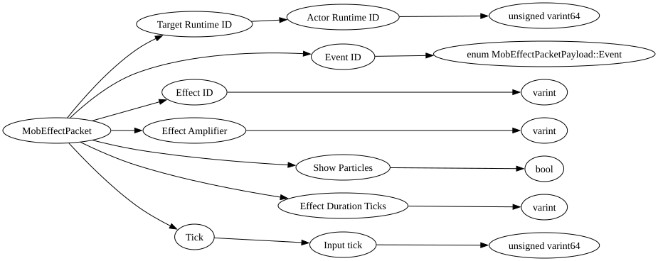

| Purpose: | Mob Effect |
| Notes: | At the start of the game the server sends any mob effects with _sendAdditionalLevelData() if the joining player saved out with them,
and then anytime a mob effect is added, removed, or updated this packet is sent. It is important for player movement simulation to ensure that the following effects are sent for the player or any client predicted vehicle they are in control of: - levitation - slow_falling - jump - movement_speed - movement_slowdown - weaving |

| Field Name | Field Type | Field Constraints | Field Notes |
|---|---|---|---|
| Target Runtime ID | ActorRuntimeID | ||
| Event ID | enum MobEffectPacketPayload::Event | ||
| Effect ID | varint | ||
| Effect Amplifier | varint | ||
| Show Particles | bool | ||
| Effect Duration Ticks | varint | ||
| Tick | PlayerInputTick | If this packet is referring to the player or a client predicted vehicle they are in control of, this should be the most recently processed PlayerInputTick from their PlayerAuthInputPacket. Otherwise zero. |